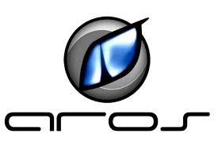
AROS
Sistema alternativo inspirado no AmigaOS. Projetado para oferecer compatibilidade com software Amiga e uma experiência leve para recursos limitados.

Explore a história, design e impacto de sistemas como Linux, Windows e projetos proprietários.
No Museu SO você encontrará interfaces históricas, logos icônicos e uma curadoria visual que conecta tecnologia e cultura.
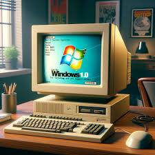
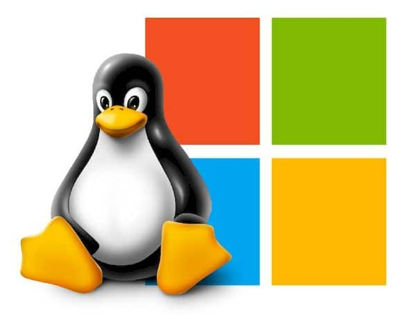
O Museu SO é uma vitrine educativa e visual que documenta a evolução dos sistemas operacionais, comparando design, filosofia e recursos práticos. Nosso objetivo é oferecer contexto histórico e técnico, além de exemplos visuais que permitem entender como interfaces e paradigmas mudaram ao longo do tempo.
Use os cards abaixo para explorar cada sistema: clique para abrir uma ficha detalhada com ano, estilo visual, principais funcionalidades e curiosidades. O botão de visita permite agendar uma experiência ou receber materiais educativos.
Uma jornada cronológica e visual através de interfaces, conceitos e marcos que moldaram a computação moderna.

Sistema alternativo inspirado no AmigaOS. Projetado para oferecer compatibilidade com software Amiga e uma experiência leve para recursos limitados.
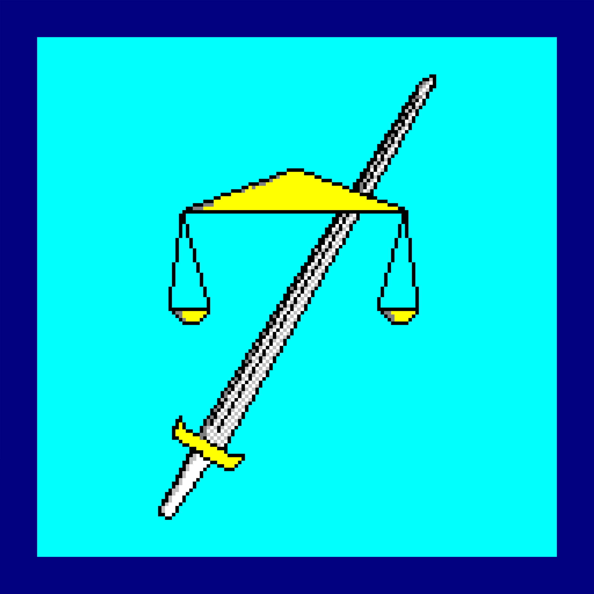
Sistema criado por Terry A. Davis, experimental e único, com estética retro e propostas de linguagem/ambiente próprias (HolyC). Relevante pela singularidade histórica e educacional.
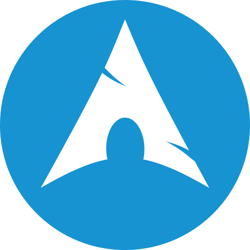
Rolling release, minimalista e altamente customizável. Popular entre usuários avançados que preferem controle total do sistema e instalação mínima.
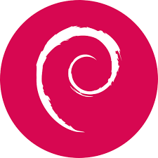
Estável, base de muitas distribuições populares. Conhecido por sua política de pacotes, enfoque na estabilidade e vasto repositório de software.
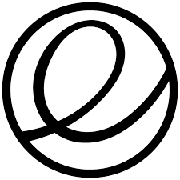
Foco em design e usabilidade, com uma interface limpa inspirada em macOS. Valoriza consistência visual e UX para usuários finais.
Inovação e tecnologias upstream no ecossistema Linux. Frequentemente testa novas soluções que depois evoluem para outras distribuições.
Distribuição voltada para segurança e pentesting, com ferramentas para análise forense, testes de intrusão e auditoria de redes.

Fácil de usar, focado em desktop e estabilidade. Ideal para migrantes do Windows que buscam uma transição suave com bom suporte de hardware.
Distribuição com foco em produtividade, otimização para hardware System76 e fluxo de trabalho moderno para desenvolvedores e criadores.
Leve e rápido, ideal para máquinas antigas e para quem precisa recuperar desempenho em computadores com recursos limitados.
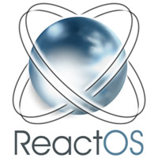
Projeto que busca reimplementar o design do Windows NT de forma open-source, tentando oferecer compatibilidade com binários e drivers Windows.
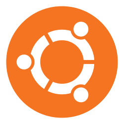
Popular e amigável, com grande comunidade, ciclos regulares de lançamento e forte suporte a usuários iniciantes e profissionais.

Sistema amplamente usado em desktops modernos, com foco em compatibilidade de software, suporte a drivers proprietários e integração com serviços Microsoft.
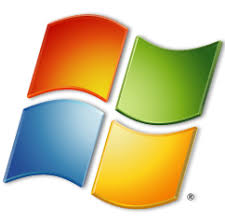
Clássico e querido por muitos, com design centrado em produtividade e simplicidade. Ainda usado em ambientes legados e nostalgia.
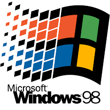
Marco histórico nas interfaces gráficas do PC, representando a popularização das GUIs no ambiente doméstico e comercial.
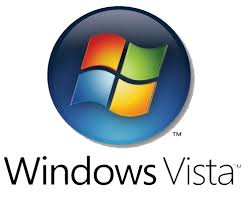
Introduziu efeitos visuais (Aero) e uma nova abordagem a segurança/contas no Windows, apesar de ter sido controverso à época.
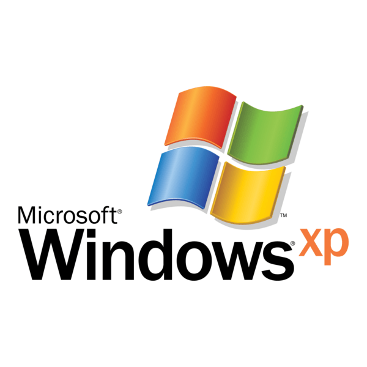
Conhecido por sua longa adoção e interface marcante; marcou uma era pela combinação de estabilidade e compatibilidade de software.
Preencha o formulário para agendar sua visita ou tirar dúvidas.